Insert the memory card and battery
With the camera off, open the bottom compartment. Insert the battery in the direction shown beside the slot, then press the SD card in until it clicks. Never force either one.
Field notes: Upgrading my Nature Photography
My journal of upgrading my nature photography skills and equipment. I have decided to upgrade my iPhone 17 shots to a Nikon COOLPIX P950 so I can better capture the birds, wildlife, water, stone, weather, and moon.
Original decorative viewfinder artwork; not documentary photography.
Setting Up For Success
For my first photo, I ignored RAW, ISO, shutter speed, aperture, and every mysterious menu item on the camera. I left the camera in Auto and took a single shot of a toy Paluxysaurus jonesi ("PAW, LUCK, SEE, saurus"), the Texas State Dinosaur, who was all ready and waiting to assist me with teaching kids how dinosaur trace tracks are made at Crescent Bend Park.
A memory card IS NOT INCLUDED with the camera. I bought a two-pack of Delkin Devices ADVANTAGE 64 GB cards.
With the camera off, open the bottom compartment. Insert the battery in the direction shown beside the slot, then press the SD card in until it clicks. Never force either one.
The Nikon P950 comes with one EN-EL20a battery, and a charging cable that connects to the camera (with the battery inserted) for charging.
I've heard that this camera will need multiple batteries because they die quickly and a battery takes three hours to charge. But before I buy any other accessories I want to successfully take, download, and post some photos.
The ON/OFF button flashes green while charging and turns off when complete. My battery came with a little juice in it, but a fully empty battery takes about three hours to charge.
The P950 weighs a little over two pounds, so I made sure to attach the strap before taking it out for a test run! I also plan on getting a tripod in the near future.
I wish I was joking, but seriously, remember to do this before turning the camera on. I had a mini heart attack that the camera was broken.
Turned the large mode dial until the Green Camera Icon aligned with the small indicator circle and let the camera make the decisions.
I wanted to make sure I actually took a photo, so I pressed the Playback Button (the button with an arrow located below the red record button) before I put the camera away.
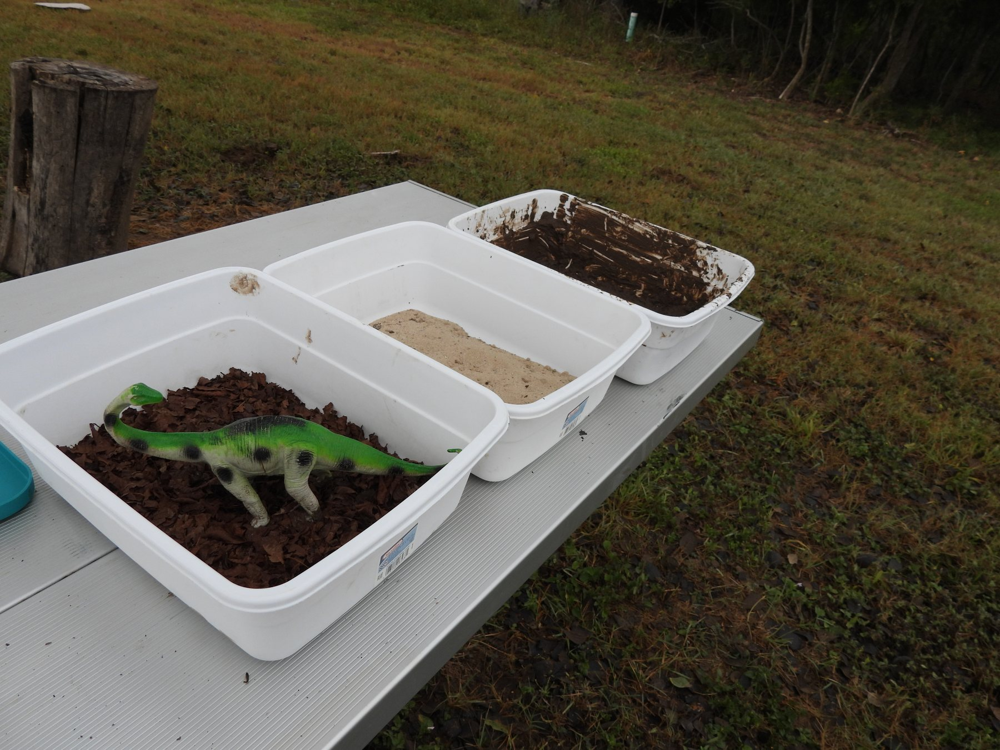
Your pictures on an iPhone
The easiest beginner workflow is to review pictures on the camera, then use Nikon SnapBridge to send a few selected JPEGs wirelessly to your iPhone. Nothing is removed from the memory card when you download it.
Beginner rule: do not delete pictures in the field. A photograph that looks mediocre on the camera's small screen may look much better on the iPhone.
Do once
Start the pairing inside SnapBridge, not in the iPhone's Bluetooth-device list.
After an outing
Use Original format sparingly. Full-size files and videos switch to Wi-Fi and take longer. Nikon's automatic Bluetooth transfers are small 2-megapixel copies, and RAW files or movies do not transfer automatically.
Later, buy an SD card reader that matches the iPhone connector: USB-C for iPhone 15 or newer, or Lightning for many older iPhones. Turn off the camera before removing its card. Put the card in the reader, connect it to the iPhone, open Photos, tap Import, select the pictures, and tap Import Selected or Import All. When asked, choose Keep on the card. Do not erase or format the card until the photographs exist on the iPhone and one other backup.
A SnapBridge copy on the iPhone is convenient. Your memory card remains the original until you copy the full files elsewhere. If iCloud Photos is enabled, wait for syncing to finish—but remember that deleting an iCloud photo deletes it from all synchronized devices. Keep two verified copies before formatting the card in the camera.
Crescent Bend field practice
My September 12, 2026 practice route includes 54 photographs and six short videos, with Cibolo Creek photographed while there is still enough light to see the bank safely.
At 6:22 p.m., sunset was forecast for about 7:42 p.m. The City of Schertz lists the park as open until sunset, so the plan turns toward the exit by about 7:30 p.m. Skip any capture that would require leaving an established path, stepping onto a slick creek bank, approaching wildlife, or photographing strangers.
Leave ISO and white balance at their defaults and keep the flash lowered. W means wide, short T means a little zoom, and medium T means moderate zoom. For each 🎥 VIDEO, leave movie quality at its default (normally 1080/30p), press the red record button, hold still for 10 seconds, and press it again. Do not zoom while recording.
What I captured
All ten photographs were taken at Crescent Bend Nature Park. Most came from the bird-blind feeding area, where the feeders, water feature, and fallen-branch perches brought the birds into view.
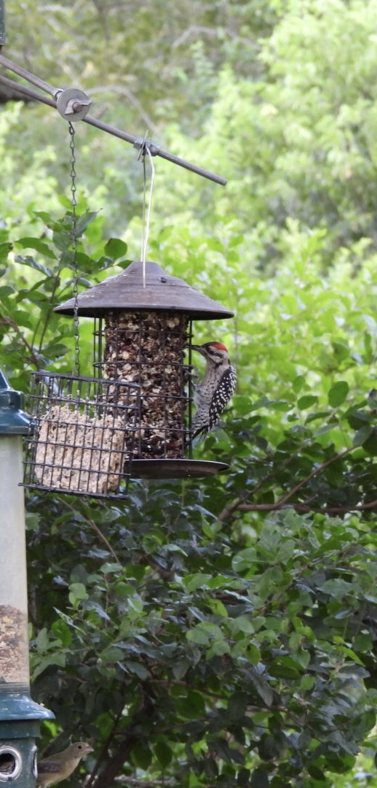
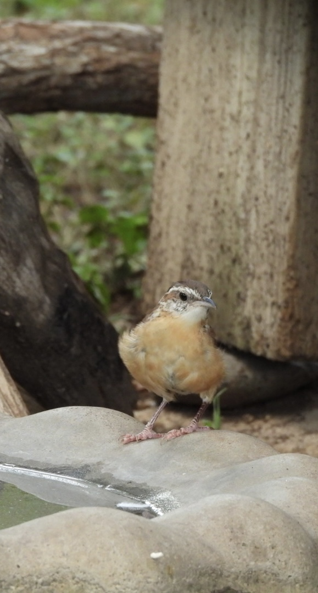
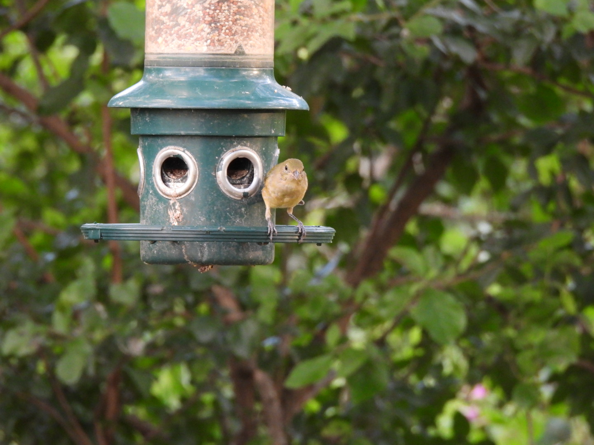
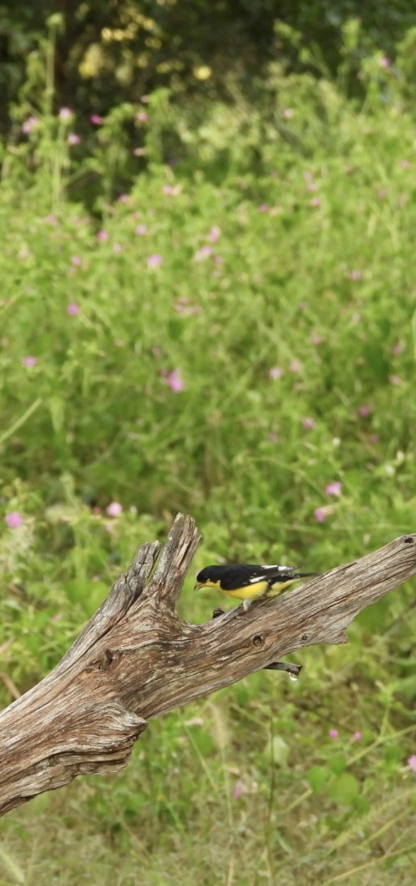
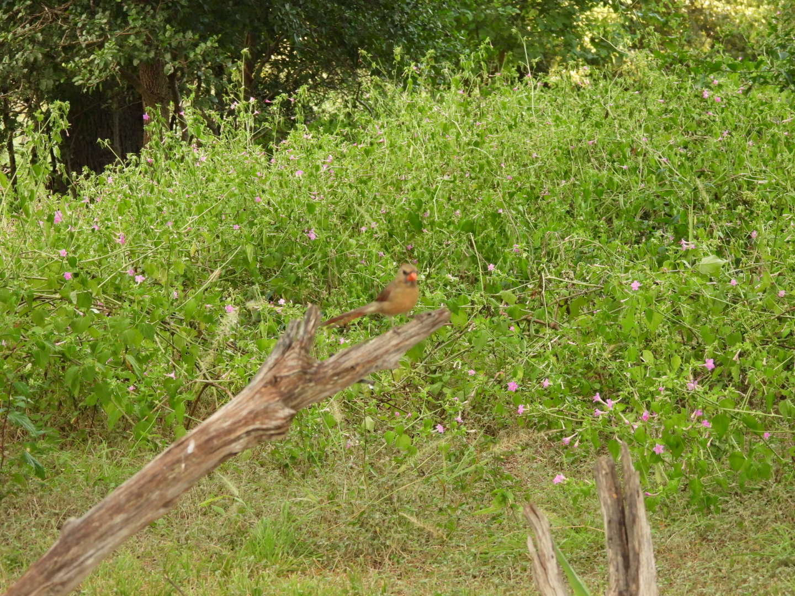
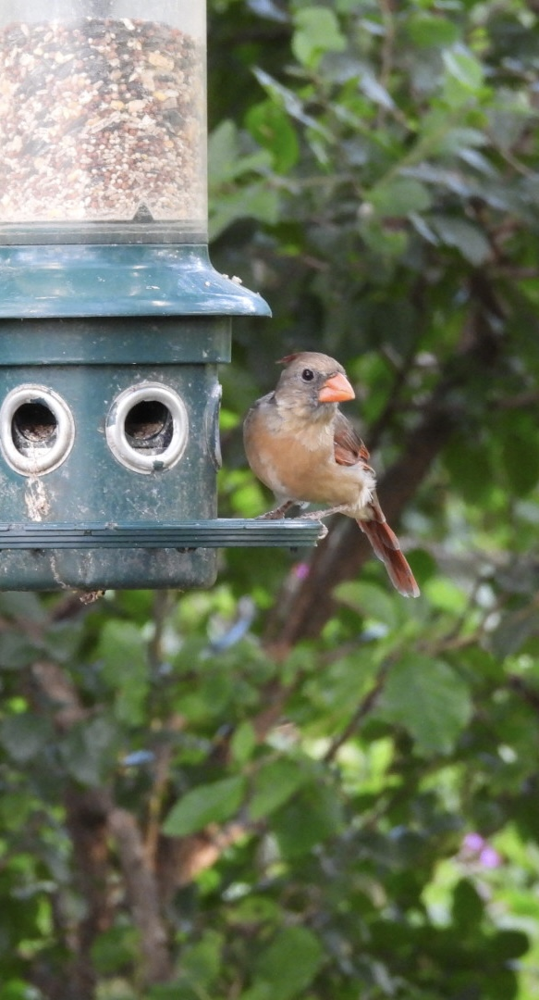
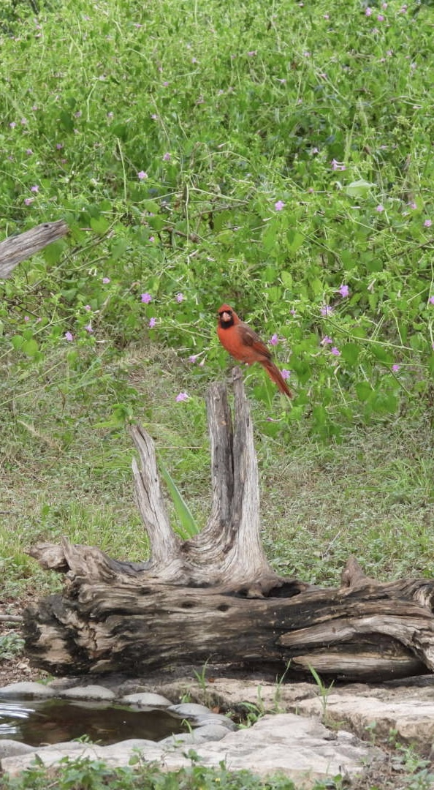
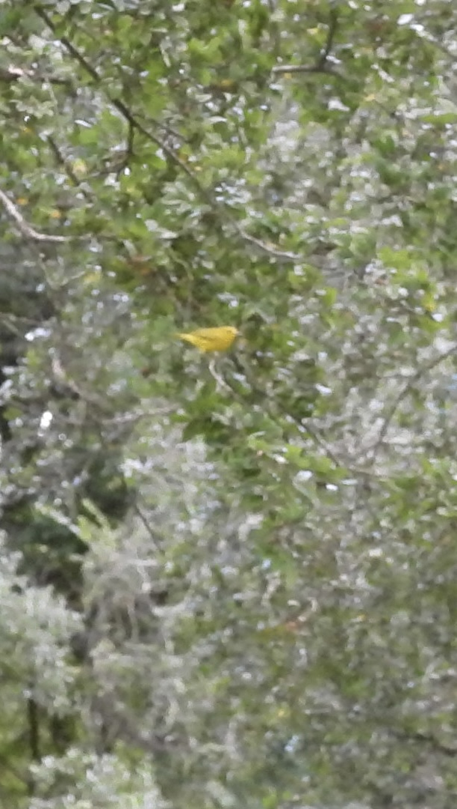
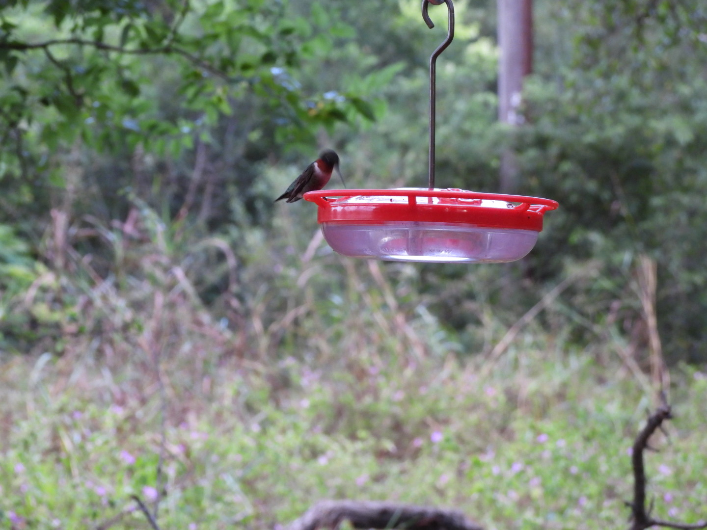
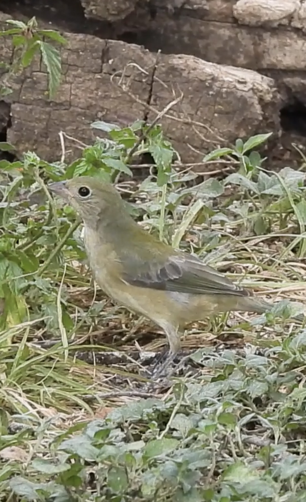
Names are based on the visible field marks in these photographs and the location. The two tentative identifications are labeled honestly so they can be revised if better views or additional field notes point elsewhere.
If no animal appears, photograph the perch, branch, water, or empty habitat and continue. Do not use flash, call birds, feed wildlife, or approach them. The creek comes first because it is easier and safer to photograph before the light fades.
Planning sources: City of Schertz Parks and the Nikon COOLPIX P950 Online Manual.
After your first 50 photographs
Do not do this all at once. Return here after Auto mode and the basic buttons feel ordinary. Change one item, take a photograph, and confirm that the camera still behaves as expected.
If the image is blurry, raise the shutter speed before blaming autofocus. At 2000 mm, tiny movements become Texas-sized problems.
Save for later
Do not memorize these yet. After you can hold, zoom, focus, photograph, and review without hunting for buttons, try one recipe at a time.
Use a small focus area on the near eye. Begin around 800–1200 mm and make short bursts.
S · 1/800–1/1250 sec · Auto ISO capped near 1600 · VR NormalLearn to track at 300–600 mm before narrowing the view. Pan through the shutter press.
S · 1/1600–1/2500 sec · Auto ISO · continuous focus and burstWork near the wide end in Macro focus. Keep the camera plane parallel to wings and use calm morning light or open shade.
A · lowest practical ISO · Macro focus · gentle supportMake a wide establishing frame, a medium environmental frame, and a tight detail. Keep horizons honest.
A · ISO 100 · 24–100 mm · approximately f/4–f/5.6Begin with Moon mode, then move to manual exposure. Use the timer so pressing the shutter does not shake the camera.
M · ISO 100 · around 1/250 sec · f/6.5 at full tele · tripod · VR offRecord stable 8–12 second clips. Avoid zooming during the take; cut between wide and tight compositions instead.
4K/30p for detail · 1080/60p for motion or gentle slow-downField mission · Hummingbirds
Your goal is one sharp eye, one hovering bird, one behavior sequence, and one short video. Start at moderate zoom, work from a predictable flower, feeder, or perch, and change only the shutter speed when the light demands it.
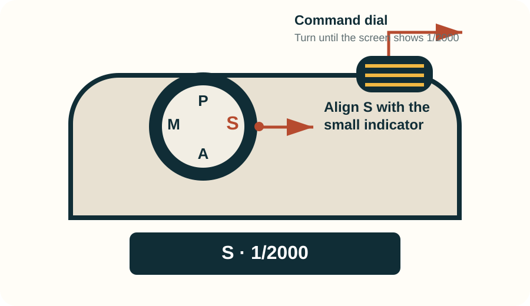
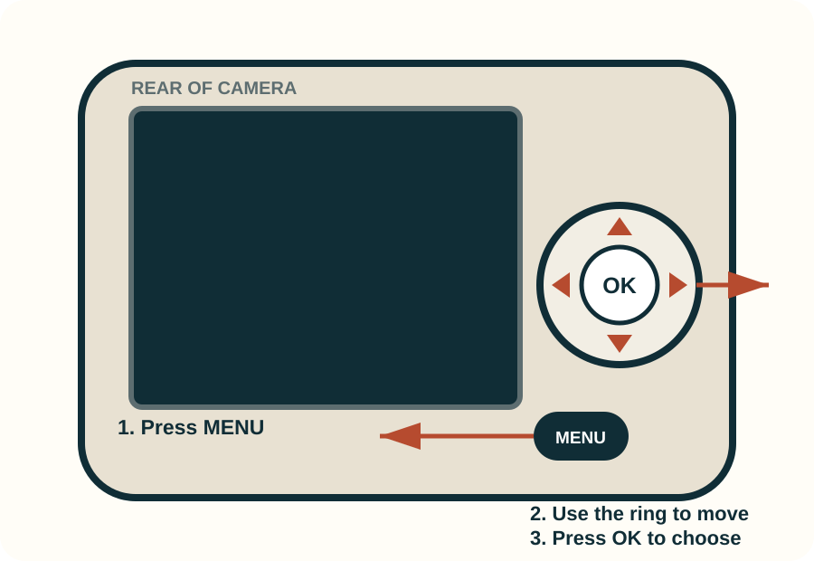
Nikon's manual includes the original numbered camera diagrams and menu documentation: camera body, ISO sensitivity, Continuous H, and AF area mode.
Do not add more menu work to your first hummingbird attempt. Leave metering, image quality, autofocus mode, and vibration reduction at their existing settings. Keep the flash lowered and begin at moderate zoom.
Use one part refined white sugar to four parts water—never red dye, honey, brown sugar, or artificial sweetener. In hot Texas weather, empty and clean the feeder daily or every other day. Do not crowd nests, block access to food, call birds, or keep shooting if your presence changes their behavior.
83× discipline
Long focal length is useful when it improves behavior, safety, or visual meaning—not when it simply makes the number larger.
Locate a bird at 300–600 mm and zoom only after it is stable in the frame. Starting at 2000 mm is like searching for a sparrow through a drinking straw.
Heat shimmer can erase distant detail even when focus is correct. Long-lens work is sharpest in cool morning air and across shorter distances.
Cradle the lens with the left hand, pull the strap lightly taut, use the viewfinder, or rest on a railing or monopod.
Three to five considered frames usually beat fifty nearly identical files. Pause, reframe, and watch for behavior.
Feather texture can look persuasive on the rear screen while the eye is soft. Check the eye at full playback magnification.
The 16 MP file has useful but finite room. Choose the sharpest expression and cleanest background before cropping.
Practice plan
Your first 100 photographs are private practice. There is no posting deadline and no need to understand every setting.
Plan a field day
Drive times are rounded estimates from central Schertz, not promises from the traffic gods. Access conditions change; follow the linked field guides and official operators before leaving.
| Place | Approx. drive | Photographic strengths | Best assignment | Access |
|---|---|---|---|---|
| Your yard or block | 0–5 min | Birds, pollinators, clouds, moon, seasonal change | One fixed viewpoint every week | Do not publish a home geotag; “Schertz” is precise enough |
| Crescent Bend Nature Park | 10–15 min | Cibolo Creek, bird blinds, riparian birds, deer, dusk reflections | Auto mode: creek context, reflection, one still bird | Public park; reported posted closing time is 9 p.m.; verify the entrance sign |
| Warbler Woods | 15–20 min | Migrants, woodland birds, pond wildlife | Bird-in-habitat portraits during migration | Private refuge; arrange by email in advance; visitors are asked to leave a sightings list |
| Fischer Park | 25–30 min | Ponds, waterbirds, reflections, sunset silhouettes | Auto mode: wide pond, medium reflection, one still bird | Public municipal park; official hours 6 a.m.–10 p.m.; check posted city notices |
| Mission San Juan + Mission Espada | 30–40 min | Stonework, acequias, farms, river corridor, grassland birds | 24 mm architecture paired with 500–1000 mm details | Free NPS sites and active churches; protect historic fabric and worship privacy |
| Mitchell Lake Audubon Center | 35–45 min | Shorebirds, ducks, raptors, wetlands, grasslands | Bird behavior sequence at 1/1250 sec | Paid admission; construction through 2027 can alter roads and trails |
| Canyon Lake Gorge | 40–50 min | Fossils, tracks, limestone, faults, springs, aquifer geology | Landscape-to-fossil geology story | Confirm current track or tour access with GBRA before driving |
| Guadalupe River State Park | 45–55 min | Cypress-lined river, kingfishers, herons, deer, reflections | Wide river context plus high-shutter wildlife | State park fee; reserve day use and check river alerts |
| The Cibolo, Boerne | 50–60 min | Creek, marsh, prairie, woodland, five ecosystems | The same six-frame story in two ecosystems | Operator advertises more than 160 acres open daily; check events and trail impacts |
| Government Canyon SNA | 45–60 min | Wildlife, limestone, overlooks, dinosaur tracks | Compressed overlooks and responsible wildlife distance | Reserve; trails close after wet weather; track route is a rocky five-mile hike |
| Palmetto State Park | 55–70 min | Dwarf palmettos, swamp-like habitat, oxbow lake, CCC structures | “Texas that looks tropical” ecosystem essay | State park admission; reserve and check river or flood conditions |
| Bracken Cave Preserve | 20–30 min | Mass bat emergence and twilight landscape | Set exposure before emergence; make silhouettes without flash | Managed, seasonal visits only; not a drop-in destination |
Arrive 45–60 minutes before sunset and leave the camera in Auto. Make one wide creek-and-sky picture, one medium reflection, and one picture of a still bird. The reported posted closing time is 9 p.m.; verify the entrance sign. Never aim the long zoom directly at the sun.
Add architecture, working landscape, water history, and environmental detail.
Use overcast forest light to build a visually distinct ecosystem narrative.
Nature Spotted
No species is guaranteed. These habitats may reveal riparian and grassland birds, waterfowl, raptors, deer, bats, pollinators, reptiles, native grasses, cypress, limestone fossils, and seasonal sky events. Community identifications can change; observation records never grant access to closed or private land.
Scan where woodland meets grass, water meets bank, or old stone meets vegetation. Ecological edges often concentrate both subjects and stories.
Feeding, preening, courtship, migration, thermoregulation, and shelter use carry more meaning than a centered identification photograph.
Repeat a view after rain, drought, flood, cold front, migration pulse, bloom, or moon phase. Photography becomes evidence when time enters the frame.
Field ethics
The camera’s greatest advantage is the ability to make intimate pictures without demanding intimacy from an animal.
Save this
Your first useful extra: one genuine Nikon EN-EL20a spare battery. A backup SD card, microfiber cloth, rain cover, monopod, tripod, and polarizer can wait until experience shows you need them.
Do not buy: an older EN-EL20 battery or a teleconverter.
Source ledger
Camera capabilities and visitor conditions were checked against manufacturers and current land managers on September 12, 2026. Conditions, fees, and access can change.
After two private weeks
Seen Near Schertz.
Begin this social series only when operating the camera no longer distracts you from looking. Your first 100 photographs owe the internet nothing.
Tuesday
Near / Far
A two-image carousel showing the setting at wide angle and the meaningful detail at 1000–2000 mm.
Thursday
Field Note
Three to six frames from one place: subject, habitat, observed behavior, and a useful visitor or stewardship note.
Sunday
One Good Photograph
The week’s strongest frame, what it taught you, and the one camera decision that mattered most.
Five content pillars
Caption field card
Track saves, shares, profile visits, and substantive comments. Likes are pleasant confetti. At month’s end, compare subject, format, focal length, and posting time; repeat the useful patterns rather than cloning the same post.